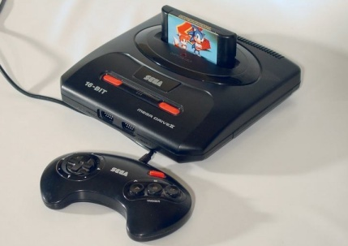

|
Sega Mega Drive  Sega Mega Drive es una videoconsola de sobremesa producida por SEGA, lanzada al mercado en 1988. Esta videoconsola es la sucesora directa de la Sega Master System y compitió contra la SNES de Nintendo, como parte de las videoconsolas de cuarta generación.
Su juego mas destacado fue Sonic the Hedegedog
NEO-GEO Neo-Geo es el nombre de un sistema de 16 bits basado en cartuchos para arcades así como videoconsolas para el hogar lanzado en 1990 por la compañía de videojuegos japonesa SNK (actualmente SNK Playmore). La tecnología del sistema ofrecía unos gráficos 2D, y una calidad de sonido muy superiores a la que ofrecían otros sistemas caseros de su época. (Sistema Avanzado de Entretenimiento).
Super Nintendo Super Nintendo Entertainment System, Super Nintendo, Super NES o SNES (conocida como Super Famicom en Japón ) fue la segunda videoconsola de sobremesa de Nintendo y la sucesora de la Nintendo Entertainment System (NES) en América y Europa. Mantuvo una gran rivalidad en todo el mundo con la Sega Mega Drive (o Sega Genesis) durante la era de 16 bits. Agunos de sus juegos mas destacados fueron Castlevania, Super Mario Kart, Metroid, Super Mario World, y Donkey Kong Country
|